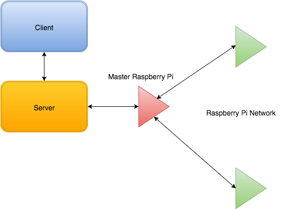

Overview
We designed a system consisting of a network of three Raspberry Pis equipped with GPS, microphones, and WiFi units. One of these Pis was designated as the "master" node and communicated directly with a server (in our case, a laptop computer). We also built a simple UI client to display a map and communicate with the server. When the user wanted to locate a particular sound source, the client sends an http request to the server. The server then queries the "master" Pi. The "master" Pi communicates with the other two Pis using a socket connection and synchronizes their local time. The three Pis listen for a sound of a particular designated frequency by using a band-pass filter in the frequency domain. Once a sound is picked up, the time stamp and GPS data is recorded. This information is aggregated by the "master" Pi, where it is sent to the server. Trilateration software is run on the server resulting in an approximate calculation of the sound source's position. This position is displayed on the map on the UI.
Unfortunately, we could not take any pictures or video of our system because filming was prohibited during the hackathon. This is because Airbnb (the hosting company) did not want to leak pictures of their then brand-new corporate HQ. Also, we were all young and stupid at the time and didn't know how to use version control. Hence, there isn't a git repository for our work either.
People
Ankush Gola, Pranav Badami, Neil Chatterjee, Akshaya Uttamadoss